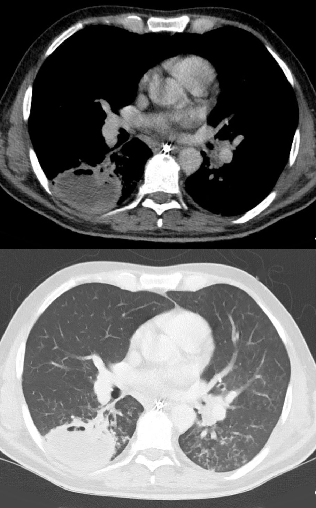

Ficha del catálogo
Absceso pulmonar
- Sistema
- Respiratorio
- Modalidad
- TC
- Región
- Tórax
- Dificultad
- Intermedio
Colección de material purulento dentro del parénquima pulmonar que se forma por necrosis de una neumonía, con frecuencia tras aspiración. Se manifiesta con fiebre prolongada, expectoración abundante y mal estado general. El principal reto de imagen consiste en separarlo de un empiema tabicado, porque el tratamiento difiere de manera sustancial.
Técnica
Tomografía de tórax con contraste intravenoso, que permite valorar la pared de la cavidad y su relación con la pleura.
Qué observar
- Cavidad de pared gruesa e irregular dentro del parénquima pulmonar
- Nivel hidroaéreo interno de tamaño similar en las distintas proyecciones
- Forma esférica y ángulo agudo con la superficie pleural
- Consolidación inflamatoria que rodea la cavidad
- Ausencia de desplazamiento de los bronquios y vasos vecinos, que quedan interrumpidos
- Localización en segmentos dependientes cuando el origen es aspirativo
Hallazgos
Lesión cavitada de pared gruesa con nivel hidroaéreo rodeada de consolidación, sin separación de las hojas pleurales.
Perlas
El absceso es esférico, forma ángulo agudo con la pleura y destruye el pulmón vecino. El empiema es lenticular, forma ángulo obtuso, comprime el pulmón y separa las hojas pleurales realzadas.
Diagnóstico diferencial
- Empiema tabicado
- Forma lenticular con ángulo obtuso y separación de las hojas pleurales.
- Carcinoma cavitado
- Pared irregular sin fiebre, sin nivel y con crecimiento en los controles.
- Bulla infectada
- Pared muy fina con antecedente de enfisema en el mismo sitio.
Simuladores
- Hernia diafragmática con asa intestinal
- Bronquiectasia quística con contenido
- Quiste hidatídico complicado
Por modalidad
- RX
- Cavidad con nivel hidroaéreo dentro de una zona consolidada
- TC
- Distingue el absceso del empiema y guía el drenaje si es necesario
Protocolo
Adquisición volumétrica con contraste en fase venosa, con reconstrucciones en los tres planos para valorar la relación con la pleura.
Clasificación
Errores frecuentes
- Drenar como empiema una cavidad intraparenquimatosa
- No valorar la vía aérea proximal en busca de una obstrucción que lo explique
- Dar por infecciosa toda cavidad sin considerar el tumor cavitado en fumadores

absceso pulmonar cavitacion nivel hidroaereo empiema aspiracion